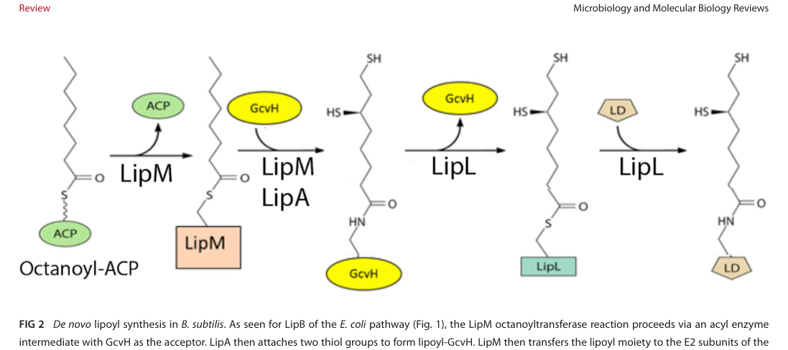

gcvH encodes the glycine cleavage system H protein, a small (120 AA) lipoyl-carrier protein that shuttles intermediates between the P, T, and L proteins of the glycine cleavage complex. The H protein binds one lipoyl cofactor covalently (at Lys-58) and functions as a mobile carrier that accepts the aminomethyl group from the P protein (gcvP, glycine dehydrogenase) and transfers it to the T protein (gcvT, aminomethyltransferase). The glycine cleavage system catalyzes the oxidative decarboxylation of glycine to produce 5,10-methylene-THF, CO2, and ammonia. In methylotrophs, this system connects the serine cycle to the THF one-carbon pool: glycine (produced from serine) is cleaved by the GCV system, generating 5,10-methylene-THF that feeds into C1 metabolism. GcvH belongs to the GcvH family and functions in the cytoplasm as part of the four-protein glycine cleavage complex (P, T, L, and H). The lipoyl group undergoes cycles of reduction and oxidation as intermediates are transferred between the complex components. GcvH is essential for glycine catabolism and for recycling one-carbon units during methylotrophic growth.
| GO Term | Evidence | Action | Reason |
|---|---|---|---|
|
GO:0005737
cytoplasm
|
IEA
GO_REF:0000118 |
ACCEPT |
Summary: GcvH functions in the cytoplasm as part of the glycine cleavage complex. This is the primary cellular location for the protein. Falcon deep research affirms a cytosolic role by conserved-mechanism inference (no direct AM1 localization study was retrieved), consistent with the soluble nature of the glycine cleavage system. [file:METEA/gcvH/gcvH-uniprot.txt, "C:cytoplasm"]
Reason: Localization to the cytoplasm is the most defensible annotation for a bacterial glycine cleavage system H protein; the GCS and associated one-carbon transformations are soluble central-metabolic processes.
Supporting Evidence:
file:METEA/gcvH/gcvH-deep-research-falcon.md
For bacterial GcvH, the functional expectation is [cytosolic localization] because the GCS and associated folate/C1 reactions are soluble central metabolic processes.
|
|
GO:0005960
glycine cleavage complex
|
IEA
GO_REF:0000002 |
ACCEPT |
Summary: GcvH is a component of the glycine cleavage complex, shuttling intermediates between the P, T, and L proteins. The complex is composed of four proteins: P, T, L and H. Falcon deep research confirms GcvH as the lipoyl-bearing carrier subunit that physically transfers reaction intermediates among the P, T, and L catalytic subunits. [file:METEA/gcvH/gcvH-uniprot.txt, "The glycine cleavage system is composed of four proteins: P, T, L and H"]
Reason: Conserved family identity (GcvH family, GCS_H / lipoyl-binding domain) and authoritative reviews place GcvH as the H subunit of the four-protein glycine cleavage complex (P, T, L, H).
Supporting Evidence:
file:METEA/gcvH/gcvH-deep-research-falcon.md
the lipoyl-bearing carrier subunit of the GCS
file:METEA/gcvH/gcvH-deep-research-falcon.md
It covalently binds lipoate and transfers reaction intermediates among the P, T, and L proteins during reversible glycine cleavage/synthesis
|
|
GO:0009249
protein lipoylation
|
IEA
GO_REF:0000118 |
ACCEPT |
Summary: GcvH itself undergoes lipoylation - it binds one lipoyl cofactor covalently at Lys-58. This lipoylation is essential for its function as a carrier protein. Falcon deep research describes GcvH as a bona fide lipoylated protein whose lipoyl group cycles between oxidized and reduced states to carry intermediates between active sites; maturation proceeds via an octanoyl-GcvH precursor that is converted to lipoyl-GcvH by sulfur insertion (LipA, a radical-SAM lipoyl synthase). In some bacteria GcvH additionally serves as an obligate intermediate in the de novo lipoylation of other complexes (a lipoyl relay). [file:METEA/gcvH/gcvH-uniprot.txt, "Binds 1 lipoyl cofactor covalently"; "N6-lipoyllysine"]
Reason: GcvH carries the canonical biotin/lipoyl-binding fold with a conserved lipoylated lysine (Lys-58); lipoylation of this acceptor is well supported across bacteria and is essential for carrier function.
Supporting Evidence:
file:METEA/gcvH/gcvH-deep-research-falcon.md
GcvH is a bona fide lipoylated protein
file:METEA/gcvH/gcvH-deep-research-falcon.md
lipoylation is essential for carrier function
file:METEA/gcvH/gcvH-deep-research-falcon.md
then sulfur atoms are inserted to yield lipoyl-GcvH
|
|
GO:0019464
glycine decarboxylation via glycine cleavage system
|
IEA
GO_REF:0000120 |
ACCEPT |
Summary: GcvH is an essential component of the glycine cleavage system that catalyzes glycine decarboxylation. The H protein shuttles the methylamine group from the P protein to the T protein during this process. Falcon deep research confirms that the (reversible) glycine cleavage system breaks glycine down to C1 units, CO2, NH3, and reducing equivalents, and that in methylotrophs this connects GcvH to one-carbon (folate) metabolism and the serine cycle. [file:METEA/gcvH/gcvH-uniprot.txt, "The glycine cleavage system catalyzes the degradation of glycine. The H protein shuttles the methylamine group of glycine from the P protein to the T protein"]
Reason: GcvH is required for glycine decarboxylation by the GCS; its lipoyl arm carries the aminomethyl intermediate from the P protein to the T protein, making it an obligate participant in this process.
Supporting Evidence:
file:METEA/gcvH/gcvH-deep-research-falcon.md
The GCS is reversible and can connect amino acid metabolism with one-carbon (C1) folate chemistry
file:METEA/gcvH/gcvH-deep-research-falcon.md
this connects GcvH to one-carbon metabolism and the serine cycle interface
|
|
GO:0140104
molecular carrier activity
|
NAS
file:METEA/gcvH/gcvH-deep-research-falcon.md |
NEW |
Summary: GcvH is the lipoyl-bearing carrier (shuttle) of the glycine cleavage system. Its covalently attached lipoyl arm binds and delivers the aminomethyl intermediate between the P, T, and L proteins, the defining molecular-carrier activity captured by GO:0140104 (a carrier moves with its cargo). This term is the molecular-function representation of the gene's core role and is supported by the falcon deep research synthesis.
Reason: Core molecular function (lipoyl-bearing carrier/shuttle) not otherwise captured by a specific MF term in the existing IEA/InterPro annotations; added to represent the gene's primary function and align core_functions.
Supporting Evidence:
file:METEA/gcvH/gcvH-deep-research-falcon.md
GcvH is a central shuttle protein
file:METEA/gcvH/gcvH-deep-research-falcon.md
It covalently binds lipoate and transfers reaction intermediates among the P, T, and L proteins during reversible glycine cleavage/synthesis
|
The research report should be a detailed narrative explaining the function, biological processes, and localization of the gene product. Citations should be given for all claims.
You should prioritize authoritative reviews and primary scientific literature when conducting research. You can supplement
this with annotations you find in gene/protein databases, but these can be outdated or inaccurate.
We are specifically interested in the primary function of the gene - for enzymes, what reaction is catalyzed, and what is the substrate specificity? For transporters, what is the substrate? For structural proteins or adapters, what is the broader structural role? For signaling molecules, what is the role in the pathway.
We are interested in where in or outside the cell the gene product carries out its function.
We are also interested in the signaling or biochemical pathways in which the gene functions. We are less interested in broad pleiotropic effects, except where these elucidate the precise role.
Include evidence where possible. We are interested in both experimental evidence as well as inference from structure, evolution, or bioinformatic analysis. Precise studies should be prioritized over high-throughput, where available.
Target identity (from user-provided UniProt metadata): UniProt C5AUG1 encodes glycine cleavage system H protein (GcvH) from Methylorubrum extorquens strain AM1 (syn. Methylobacterium extorquens AM1). GcvH proteins are small soluble lipoyl-carrier proteins characterized by a biotin/lipoyl-binding fold (lipoyl domain) and a conserved lipoylable Lys residue.
Ambiguity check: Within the retrieved literature corpus, “gcvH” consistently refers to the H protein of the glycine cleavage system, i.e., the lipoyl-bearing carrier subunit of the GCS; no conflicting gene meaning for this symbol was detected in the retrieved documents. However, the retrieved publications did not explicitly cross-reference UniProt C5AUG1 or the AM1 ordered locus MexAM1_META1p0621, so strain-specific confirmation beyond the UniProt metadata relies on family-level conservation and pathway consistency rather than a direct accession match. This limitation is explicitly reflected in the confidence statements below. (cronan2024lipoicacidattachment pages 2-4, claassens2022engineeringthereductive pages 7-9)
The glycine cleavage/synthase system is a multi-protein complex typically described as four components:
- P protein (GcvP): glycine dehydrogenase/decarboxylase
- T protein (GcvT): aminomethyltransferase
- L protein (GcvL/Lpd): lipoamide dehydrogenase
- H protein (GcvH): the lipoyl-bearing carrier/shuttle
A key, widely accepted mechanistic concept is that GcvH is a central shuttle protein that covalently binds lipoic acid (lipoylation) and transfers reaction intermediates among catalytic subunits during glycine cleavage or (in reverse) glycine synthesis. (claassens2022engineeringthereductive pages 7-9)
The GCS is reversible and can connect amino acid metabolism with one-carbon (C1) folate chemistry:
- In the glycine cleavage direction, the system is commonly used to break down glycine and generate C1 units (as folate-bound intermediates), alongside CO2/NH3 and reducing equivalents.
- In the reverse (glycine synthase) direction, the GCS can catalyze the conversion of methylene-THF + CO2 + NH3 + NADH → glycine.
A quantitative thermodynamic statistic reported for the reverse direction in a synthetic-metabolism context is ΔrG0m ≈ +4.9 kJ/mol (pH 7.5, ionic strength 0.25, all reactants 1 mM), supporting the view that the reverse direction can be feasible under favorable conditions (e.g., elevated CO2 and NH3). (claassens2022engineeringthereductive pages 7-9)
Lipoylation is a post-translational modification in which lipoic acid is covalently attached (amide linkage) to a conserved lysine on the lipoyl domain of target proteins, including GcvH. Functionally, the lipoyl group cycles between oxidized/reduced states and physically carries intermediates between active sites.
A review of lipoate attachment notes that lipoyl acceptor domains are on the order of ~80 residues, and that GcvH is a bona fide lipoylated protein. (cronan2024lipoicacidattachment pages 2-4)
A contemporary authoritative synthesis (Microbiology and Molecular Biology Reviews, 2024) describes canonical bacterial logic as a two-stage process:
1) Octanoylation: octanoate is transferred from octanoyl-ACP to protein acceptors (including GcvH) by octanoyltransferases such as LipB (in E. coli) or LipM (in some Firmicutes). (cronan2024lipoicacidattachment pages 2-4)
2) Sulfur insertion: LipA (lipoyl synthase; radical SAM enzyme) inserts sulfur atoms into the protein-bound octanoyl group to form the mature lipoyl cofactor. Importantly, the protein-bound octanoyl domain is the LipA substrate, whereas octanoyl-ACP itself is not a LipA substrate. (cronan2024lipoicacidattachment pages 2-4)
A major mechanistic insight emphasized for some bacteria (e.g., Bacillus subtilis) is a lipoyl relay pathway in which:
- LipM octanoylates GcvH
- LipA converts octanoyl-GcvH to lipoyl-GcvH
- LipL transfers lipoyl groups from GcvH to E2 subunits of 2-oxoacid dehydrogenases
Deletion of gcvH in this relay context causes lipoate auxotrophy, supporting the concept that GcvH can be an obligate intermediate in de novo lipoylation of other complexes in those organisms. (cronan2024lipoicacidattachment pages 4-7)
A key “specificity rule” highlighted in the 2024 review is that a single glutamate residue positioned three residues upstream of the lipoyl-lysine can dictate whether a ligase (e.g., LplJ) modifies a given acceptor protein, illustrating how sequence context can tune which proteins become lipoylated. (cronan2024lipoicacidattachment pages 4-7)
Visual evidence: A schematic of the B. subtilis lipoyl relay pathway placing GcvH at the center of octanoylation → sulfur insertion → transfer to E2 lipoyl domains is available from the retrieved figure. (cronan2024lipoicacidattachment media 297ebf5f)
A review of reductive glycine pathway engineering notes that gcvT, gcvH, and gcvP are commonly co-localized in a single operon/locus, whereas the L protein (gcvL/lpd) is often encoded elsewhere because it also participates in pyruvate and α-ketoglutarate dehydrogenase complexes. (claassens2022engineeringthereductive pages 9-11)
For bacteria, the GCS and folate-linked one-carbon transformations are typically soluble cytosolic processes. No retrieved AM1-focused primary paper directly localizes UniProt C5AUG1 experimentally, so localization for AM1 should be treated as inferred (cytosolic), not directly demonstrated in this evidence set. (cronan2024lipoicacidattachment pages 2-4, claassens2022engineeringthereductive pages 7-9)
Direct experimental literature explicitly keyed to UniProt C5AUG1 / MexAM1_META1p0621 was not retrieved here; nonetheless, several 2024 studies provide relevant Methylorubrum context for glycine/C1 metabolism modules.
A 2024 Applied and Environmental Microbiology study examined glycine betaine (GB) utilization in Methylorubrum extorquens strains, including an AM1 WT (Δbcs) strain that showed measurable growth on GB with growth rate 0.103 and doubling time 6.71 h in their assay conditions. (hying2024glycinebetainemetabolism pages 4-6)
In the same study, strain PA1 genetics were used to probe one-carbon metabolism dependencies during GB catabolism. Notably, the authors constructed a mutant deleting the glycine cleavage complex genes as ΔgcvPHT (loci Mext_0853–0855 in PA1) in a background already deleted for ftfL (a key assimilatory C1 enzyme). Under GB growth conditions, the dgcBP30LΔftfLΔgcvPHT strain still grew (growth rate 0.112; doubling time 6.14 h), and the paper interprets this as consistent with GB/DMG demethylation yielding free formaldehyde for oxidation while sarcosine demethylation could provide sufficient methylene-THF for one-carbon metabolism under those specific conditions. (hying2024glycinebetainemetabolism pages 4-6, hying2024glycinebetainemetabolism pages 9-11)
Interpretation for AM1 functional annotation: While these data are not AM1 gcvH knockouts and do not directly test C5AUG1, they reinforce that in Methylorubrum lineages glycine/C1 modules (including glycine cleavage complex genes) are genetically tractable and can be conditionally dispensable depending on which C1 sources are available.
A synthetic metabolism compendium lists extorquens-associated entries containing gcvTHP (and variants including split gcvP subunits) on either plasmid or genome, supporting the expectation that extorquens strains encode the canonical GCS core genes. This does not resolve AM1-specific operon boundaries or link to C5AUG1 directly, but supports pathway presence. (claassens2022engineeringthereductive pages 26-26)
Cronan (2024, Microbiology and Molecular Biology Reviews) reviews multiple expansions of the classical picture of lipoate attachment, including new salvage/ligase routes, broader organismal distribution, and mechanistic details such as relay pathways and acceptor specificity determinants, all of which are directly relevant because GcvH is one of the core lipoylated targets. (cronan2024lipoicacidattachment pages 1-2, cronan2024lipoicacidattachment pages 2-4)
Tanabe et al. (2023, PLOS Biology) provided experimental evidence for a novel lipoate assembly pathway involving an sLpl(AB) ligase plus two radical SAM proteins (LipS1/LipS2) that together act as a lipoyl synthase system. The discovery was linked to the observation that certain GcvH-like acceptor proteins in sulfur oxidizers were not modified by canonical machineries, motivating genomic-context and phylogenetic analyses that revealed broader diversity and modularity of lipoate assembly than previously appreciated. (tanabe2023identificationofa pages 2-4, tanabe2023identificationofa pages 1-2)
GcvH and the GCS are central components in engineered reductive glycine pathway strategies for C1 assimilation and glycine/serine production. (claassens2022engineeringthereductive pages 9-11, claassens2022engineeringthereductive pages 7-9)
A 2024 ACS Synthetic Biology study demonstrated a lysate-based, cell-free multienzyme biocatalyst for amino acid synthesis from CO2 equivalents (formate + bicarbonate) and ammonia. In that system, the reverse GCS module was used for glycine synthesis, and quantitative expression measurements indicated that gcvH expression was markedly lower than other components, suggesting GcvH can be an implementation bottleneck in engineered settings. Example quantitative measurements include peaks of ~5 ng/µL for gcvL/gcvP/lplA and ~20 ng/µL for gcvT, with a tested gcvHLPT gene ratio of 8:1:1:1. The work also reports THF depletion dynamics (to 0.38 ± 0.13 mM after 30 min) and serine titers on the order of 0.11–0.29 mM depending on module combinations. (chowdhury2024carbonnegativesynthesis pages 7-8)
By strong conserved-mechanism consensus, GcvH (including C5AUG1) should be annotated as a lipoyl-bearing carrier/shuttle protein in the glycine cleavage system, required for transferring reaction intermediates among GCS subunits and enabling folate-linked C1 metabolism. (claassens2022engineeringthereductive pages 7-9)
C5AUG1 is expected to be lipoylated on a conserved lysine, with maturation requiring an octanoyl transfer step and a LipA sulfur insertion step. The exact enzymes performing these steps and whether AM1 uses a LipL relay-like architecture are not resolved by the retrieved AM1-focused evidence; however, the biochemical logic of protein-bound octanoyl intermediates and LipA catalysis is well supported across bacteria. (cronan2024lipoicacidattachment pages 2-4, cronan2024lipoicacidattachment pages 4-7)
Absent direct AM1 experimental evidence, the most defensible annotation is that GcvH functions in the cytosol, consistent with bacterial central metabolism and the soluble nature of the GCS described in authoritative reviews. (cronan2024lipoicacidattachment pages 2-4, claassens2022engineeringthereductive pages 7-9)
M. extorquens AM1 is a serine-cycle methylotroph, and in principle the GCS can interface with methylene-THF pools and glycine/serine interconversions. Nevertheless, within the retrieved corpus we did not obtain a primary AM1 study directly interrogating gcvH (C5AUG1) (e.g., mutant phenotypes, flux roles during methylotrophic growth). Closest available evidence comes from related Methylorubrum strain genetics during glycine betaine utilization and a catalog-level listing of gcv loci in extorquens strains. (hying2024glycinebetainemetabolism pages 4-6, hying2024glycinebetainemetabolism pages 9-11, claassens2022engineeringthereductive pages 26-26)
| Aspect | Summary | Evidence / quantitative details |
|---|---|---|
| Verified target identity | UniProt C5AUG1 is consistent with gcvH, the glycine cleavage system H protein of Methylorubrum extorquens AM1; retrieved literature did not reveal a conflicting use of the symbol in this context. Family/domain interpretation is consistent with a lipoyl-carrier H protein of the GCS. | Conserved GcvH definition as lipoyl-bearing H protein in GCS (cronan2024lipoicacidattachment pages 2-4, claassens2022engineeringthereductive pages 7-9) |
| Primary molecular function | GcvH is the lipoyl-bearing carrier/shuttle protein of the glycine cleavage/synthase system. It covalently binds lipoate and transfers reaction intermediates among the P, T, and L proteins during reversible glycine cleavage/synthesis. | Defined as a “central shuttle protein” that covalently binds lipoic acid; part of reversible GCS/rGlyP chemistry (claassens2022engineeringthereductive pages 7-9) |
| Reaction / pathway context | In the glycine cleavage direction, GCS converts glycine into C1 units, CO2, NH3, and reducing equivalents; in the reverse direction it can synthesize glycine from methylene-THF, CO2, NH3, and NADH. In methylotrophs this connects GcvH to one-carbon metabolism and the serine cycle interface. | Reverse GCS thermodynamics reported as ΔrG0m ≈ +4.9 kJ/mol at pH 7.5, ionic strength 0.25, all reactants 1 mM; favored by elevated CO2 and NH3 (claassens2022engineeringthereductive pages 7-9) |
| Post-translational modification | GcvH carries a covalently attached lipoyl group on a conserved lysine; lipoylation is essential for carrier function. The precursor is usually octanoyl-GcvH, then sulfur atoms are inserted to yield lipoyl-GcvH. | Lipoyl acceptor domains are ~80 aa; GcvH is a bona fide lipoylated protein (cronan2024lipoicacidattachment pages 2-4) |
| Lipoylation enzymes and routes | Canonical bacterial routes include LipB or LipM for octanoyl transfer, LipA for sulfur insertion, LipL for amidotransfer/relay in some bacteria, and LplA/LplJ for salvage ligation of free lipoate or octanoate. In B. subtilis, LipM acts first on GcvH, LipA converts octanoyl-GcvH to lipoyl-GcvH, and LipL relays lipoyl groups to E2 subunits. | Deletion of gcvH in the relay system causes lipoate auxotrophy; ligase specificity can depend on a glutamate residue 3 positions upstream of the target lysine (cronan2024lipoicacidattachment pages 4-7, cronan2024lipoicacidattachment pages 2-4) |
| Recent lipoylation developments (2023–2024) | Recent work expanded lipoylation biology beyond canonical pathways: a novel sLpl(AB)–LipS1/S2 lipoate assembly pathway was identified in 2023, and 2024 reviews synthesized new lipoyl-relay, salvage, and specificity mechanisms. | Novel pathway discovery and evolutionary analysis (tanabe2023identificationofa pages 2-4, tanabe2023identificationofa pages 1-2); broad 2024 synthesis of attachment/salvage advances (cronan2024lipoicacidattachment pages 1-2) |
| Cellular localization | For bacterial GcvH, the functional expectation is cytosolic localization because the GCS and associated folate/C1 reactions are soluble central metabolic processes. No retrieved AM1 paper directly localized C5AUG1 experimentally. | General bacterial GCS context supports cytosolic role; no direct AM1 localization found (cronan2024lipoicacidattachment pages 2-4, claassens2022engineeringthereductive pages 7-9) |
| Genetic context | GCS genes often occur with gcvT, gcvH, gcvP co-localized in an operon/locus, whereas lpd/gcvL may be encoded elsewhere because it also serves other dehydrogenase complexes. Some organisms carry split gcvP subunits. | Operon tendency: T/H/P co-localized; L often outside due to shared function (claassens2022engineeringthereductive pages 9-11) |
| Evidence in Methylorubrum extorquens lineage | Direct AM1-specific functional papers for UniProt C5AUG1 were limited, but extorquens lineage evidence supports presence/use of GCS genes. A catalog-style source lists extorquens entries with gcvTHP on plasmid or genome. | Extorquens-associated gcvTHP / gcvTHPaPb entries listed (claassens2022engineeringthereductive pages 26-26) |
| AM1-specific phenotype linked to nearby biology | In a 2024 study of glycine betaine utilization, AM1 WT (Δbcs) grew on glycine betaine, showing this species can route GB-derived carbon into central metabolism that intersects glycine/C1 pathways. | Growth rate 0.103, doubling time 6.71 h for AM1 WT on GB; PA1 WT showed no growth under the same assay (hying2024glycinebetainemetabolism pages 4-6, hying2024glycinebetainemetabolism pages 6-9) |
| PA1 deletion evidence relevant to GCS | In M. extorquens PA1, the glycine cleavage complex genes were deleted as ΔgcvPHT (loci Mext_0853–0855) in a dgcBP30LΔftfLΔgcvPHT background. Under glycine betaine growth, this mutant still grew, implying GCS was not essential for GB utilization in that condition. | dgcBP30LΔftfLΔgcvPHT: growth rate 0.112, doubling time 6.14 h; background lacked both ftfL and gcvPHT (hying2024glycinebetainemetabolism pages 4-6, hying2024glycinebetainemetabolism pages 9-11) |
| Interpretation of PA1 GB study | The PA1 study concluded that GB/DMG demethylation mainly produced free formaldehyde for oxidation, while sarcosine demethylation could supply sufficient methylene-THF for one-carbon metabolism even when gcvPHT and ftfL were deleted in that background. | Mutant lacking both primary THF-linked C1 sources had strong defects on most substrates, but no demonstrable GB-growth defect in the tested condition (hying2024glycinebetainemetabolism pages 9-11) |
| Synthetic biology / applications | GcvH and GCS are actively used in engineered reductive glycine pathway and cell-free C1 assimilation platforms for glycine/serine production from formate/CO2 equivalents. These implementations treat GcvH as a required lipoyl-bearing carrier and sometimes identify it as an expression bottleneck. | In cell-free systems, tested gcvHLPT ratio = 8:1:1:1; gcvL/gcvP/lplA ~5 ng/µL, gcvT ~20 ng/µL, but gcvH remained low; THF declined to 0.38 ± 0.13 mM after 30 min; serine titers ranged 0.11–0.29 mM depending on module configuration (chowdhury2024carbonnegativesynthesis pages 7-8) |
| Annotation confidence for C5AUG1 | High confidence for general biochemical role (lipoyl carrier in GCS); moderate confidence for AM1-specific pathway placement in one-carbon metabolism; low confidence for AM1-specific operon structure/localization/essentiality because direct C5AUG1-focused literature was not retrieved. | Strong conserved-function evidence, limited direct AM1-specific evidence (cronan2024lipoicacidattachment pages 2-4, claassens2022engineeringthereductive pages 7-9, claassens2022engineeringthereductive pages 26-26) |
Table: This table summarizes the most relevant functional annotation points for GcvH corresponding to UniProt C5AUG1 in Methylorubrum extorquens AM1. It integrates conserved biochemical function, lipoylation biology, likely cellular context, and the strongest available Methylorubrum-specific evidence and quantitative data.
Within the retrieved set, there is no AM1-focused primary study directly characterizing gcvH (C5AUG1) (e.g., gene essentiality during methanol growth, operon mapping, proteomic detection of lipoylation site occupancy, or knockout complementation). The most impactful next sources would be:
- AM1 genome/operon annotation resources that explicitly map MexAM1_META1p0621 to a gcv locus;
- AM1 transcriptomics/proteomics identifying GcvH and its lipoylation state under methylotrophic vs multicarbon growth;
- AM1 mutant studies (ΔgcvH or conditional knockdowns) measuring growth on methanol, glycine, serine, and/or C1/C2 co-substrates.
Despite these gaps, the core biochemical function of GcvH as a lipoyl-bearing carrier protein in GCS is strongly supported by authoritative mechanistic literature and is consistent with the UniProt-provided family/domain description.
References
(cronan2024lipoicacidattachment pages 2-4): John E. Cronan. Lipoic acid attachment to proteins: stimulating new developments. Microbiology and Molecular Biology Reviews, Jun 2024. URL: https://doi.org/10.1128/mmbr.00005-24, doi:10.1128/mmbr.00005-24. This article has 21 citations and is from a domain leading peer-reviewed journal.
(claassens2022engineeringthereductive pages 7-9): Nico J. Claassens, Ari Satanowski, Viswanada R. Bysani, Beau Dronsella, Enrico Orsi, Vittorio Rainaldi, Suzan Yilmaz, Sebastian Wenk, and Steffen N. Lindner. Engineering the reductive glycine pathway: a promising synthetic metabolism approach for c1-assimilation. Advances in biochemical engineering/biotechnology, pages 299-350, Apr 2022. URL: https://doi.org/10.1007/10_2021_181, doi:10.1007/10_2021_181. This article has 35 citations.
(cronan2024lipoicacidattachment pages 4-7): John E. Cronan. Lipoic acid attachment to proteins: stimulating new developments. Microbiology and Molecular Biology Reviews, Jun 2024. URL: https://doi.org/10.1128/mmbr.00005-24, doi:10.1128/mmbr.00005-24. This article has 21 citations and is from a domain leading peer-reviewed journal.
(cronan2024lipoicacidattachment media 297ebf5f): John E. Cronan. Lipoic acid attachment to proteins: stimulating new developments. Microbiology and Molecular Biology Reviews, Jun 2024. URL: https://doi.org/10.1128/mmbr.00005-24, doi:10.1128/mmbr.00005-24. This article has 21 citations and is from a domain leading peer-reviewed journal.
(claassens2022engineeringthereductive pages 9-11): Nico J. Claassens, Ari Satanowski, Viswanada R. Bysani, Beau Dronsella, Enrico Orsi, Vittorio Rainaldi, Suzan Yilmaz, Sebastian Wenk, and Steffen N. Lindner. Engineering the reductive glycine pathway: a promising synthetic metabolism approach for c1-assimilation. Advances in biochemical engineering/biotechnology, pages 299-350, Apr 2022. URL: https://doi.org/10.1007/10_2021_181, doi:10.1007/10_2021_181. This article has 35 citations.
(hying2024glycinebetainemetabolism pages 4-6): Zachary T. Hying, Tyler J. Miller, Chin Yi Loh, and Jannell V. Bazurto. Glycine betaine metabolism is enabled in methylorubrum extorquens pa1 by alterations to dimethylglycine dehydrogenase. Applied and Environmental Microbiology, Jul 2024. URL: https://doi.org/10.1128/aem.02090-23, doi:10.1128/aem.02090-23. This article has 6 citations and is from a peer-reviewed journal.
(hying2024glycinebetainemetabolism pages 9-11): Zachary T. Hying, Tyler J. Miller, Chin Yi Loh, and Jannell V. Bazurto. Glycine betaine metabolism is enabled in methylorubrum extorquens pa1 by alterations to dimethylglycine dehydrogenase. Applied and Environmental Microbiology, Jul 2024. URL: https://doi.org/10.1128/aem.02090-23, doi:10.1128/aem.02090-23. This article has 6 citations and is from a peer-reviewed journal.
(claassens2022engineeringthereductive pages 26-26): Nico J. Claassens, Ari Satanowski, Viswanada R. Bysani, Beau Dronsella, Enrico Orsi, Vittorio Rainaldi, Suzan Yilmaz, Sebastian Wenk, and Steffen N. Lindner. Engineering the reductive glycine pathway: a promising synthetic metabolism approach for c1-assimilation. Advances in biochemical engineering/biotechnology, pages 299-350, Apr 2022. URL: https://doi.org/10.1007/10_2021_181, doi:10.1007/10_2021_181. This article has 35 citations.
(cronan2024lipoicacidattachment pages 1-2): John E. Cronan. Lipoic acid attachment to proteins: stimulating new developments. Microbiology and Molecular Biology Reviews, Jun 2024. URL: https://doi.org/10.1128/mmbr.00005-24, doi:10.1128/mmbr.00005-24. This article has 21 citations and is from a domain leading peer-reviewed journal.
(tanabe2023identificationofa pages 2-4): Tomohisa Sebastian Tanabe, Martina Grosser, Lea Hahn, Carolin Kümpel, Hanna Hartenfels, Evelyn Vtulkin, Wanda Flegler, and Christiane Dahl. Identification of a novel lipoic acid biosynthesis pathway reveals the complex evolution of lipoate assembly in prokaryotes. PLOS Biology, 21:e3002177, Jun 2023. URL: https://doi.org/10.1371/journal.pbio.3002177, doi:10.1371/journal.pbio.3002177. This article has 15 citations and is from a highest quality peer-reviewed journal.
(tanabe2023identificationofa pages 1-2): Tomohisa Sebastian Tanabe, Martina Grosser, Lea Hahn, Carolin Kümpel, Hanna Hartenfels, Evelyn Vtulkin, Wanda Flegler, and Christiane Dahl. Identification of a novel lipoic acid biosynthesis pathway reveals the complex evolution of lipoate assembly in prokaryotes. PLOS Biology, 21:e3002177, Jun 2023. URL: https://doi.org/10.1371/journal.pbio.3002177, doi:10.1371/journal.pbio.3002177. This article has 15 citations and is from a highest quality peer-reviewed journal.
(chowdhury2024carbonnegativesynthesis pages 7-8): Shaafique Chowdhury, Ray Westenberg, Kimberly Wennerholm, Ryan A.L. Cardiff, Alexander S. Beliaev, Vincent Noireaux, James M. Carothers, and Pamela Peralta-Yahya. Carbon negative synthesis of amino acids using a cell-free-based biocatalyst. ACS Synthetic Biology, 13:3961-3975, Nov 2024. URL: https://doi.org/10.1021/acssynbio.4c00359, doi:10.1021/acssynbio.4c00359. This article has 17 citations and is from a domain leading peer-reviewed journal.
(hying2024glycinebetainemetabolism pages 6-9): Zachary T. Hying, Tyler J. Miller, Chin Yi Loh, and Jannell V. Bazurto. Glycine betaine metabolism is enabled in methylorubrum extorquens pa1 by alterations to dimethylglycine dehydrogenase. Applied and Environmental Microbiology, Jul 2024. URL: https://doi.org/10.1128/aem.02090-23, doi:10.1128/aem.02090-23. This article has 6 citations and is from a peer-reviewed journal.

---
id: C5AUG1
gene_symbol: gcvH
product_type: PROTEIN
taxon:
id: NCBITaxon:272630
label: Methylorubrum extorquens AM1
description: 'gcvH encodes the glycine cleavage system H protein, a small (120 AA)
lipoyl-carrier protein that shuttles intermediates between the P, T, and L proteins
of the glycine cleavage complex. The H protein binds one lipoyl cofactor covalently
(at Lys-58) and functions as a mobile carrier that accepts the aminomethyl group
from the P protein (gcvP, glycine dehydrogenase) and transfers it to the T protein
(gcvT, aminomethyltransferase). The glycine cleavage system catalyzes the oxidative
decarboxylation of glycine to produce 5,10-methylene-THF, CO2, and ammonia. In methylotrophs,
this system connects the serine cycle to the THF one-carbon pool: glycine (produced
from serine) is cleaved by the GCV system, generating 5,10-methylene-THF that feeds
into C1 metabolism. GcvH belongs to the GcvH family and functions in the cytoplasm
as part of the four-protein glycine cleavage complex (P, T, L, and H). The lipoyl
group undergoes cycles of reduction and oxidation as intermediates are transferred
between the complex components. GcvH is essential for glycine catabolism and for
recycling one-carbon units during methylotrophic growth.'
existing_annotations:
- term:
id: GO:0005737
label: cytoplasm
evidence_type: IEA
original_reference_id: GO_REF:0000118
review:
summary: GcvH functions in the cytoplasm as part of the glycine cleavage complex.
This is the primary cellular location for the protein. Falcon deep research
affirms a cytosolic role by conserved-mechanism inference (no direct AM1
localization study was retrieved), consistent with the soluble nature of the
glycine cleavage system. [file:METEA/gcvH/gcvH-uniprot.txt, "C:cytoplasm"]
action: ACCEPT
reason: Localization to the cytoplasm is the most defensible annotation for a
bacterial glycine cleavage system H protein; the GCS and associated one-carbon
transformations are soluble central-metabolic processes.
supported_by:
- reference_id: file:METEA/gcvH/gcvH-deep-research-falcon.md
supporting_text: For bacterial GcvH, the functional expectation is [cytosolic
localization] because the GCS and associated folate/C1 reactions are soluble
central metabolic processes.
- term:
id: GO:0005960
label: glycine cleavage complex
evidence_type: IEA
original_reference_id: GO_REF:0000002
review:
summary: 'GcvH is a component of the glycine cleavage complex, shuttling intermediates
between the P, T, and L proteins. The complex is composed of four proteins:
P, T, L and H. Falcon deep research confirms GcvH as the lipoyl-bearing carrier
subunit that physically transfers reaction intermediates among the P, T, and
L catalytic subunits. [file:METEA/gcvH/gcvH-uniprot.txt, "The glycine cleavage
system is composed of four proteins: P, T, L and H"]'
action: ACCEPT
reason: Conserved family identity (GcvH family, GCS_H / lipoyl-binding domain)
and authoritative reviews place GcvH as the H subunit of the four-protein
glycine cleavage complex (P, T, L, H).
supported_by:
- reference_id: file:METEA/gcvH/gcvH-deep-research-falcon.md
supporting_text: the lipoyl-bearing carrier subunit of the GCS
- reference_id: file:METEA/gcvH/gcvH-deep-research-falcon.md
supporting_text: It covalently binds lipoate and transfers reaction intermediates
among the P, T, and L proteins during reversible glycine cleavage/synthesis
- term:
id: GO:0009249
label: protein lipoylation
evidence_type: IEA
original_reference_id: GO_REF:0000118
review:
summary: GcvH itself undergoes lipoylation - it binds one lipoyl cofactor covalently
at Lys-58. This lipoylation is essential for its function as a carrier protein.
Falcon deep research describes GcvH as a bona fide lipoylated protein whose
lipoyl group cycles between oxidized and reduced states to carry intermediates
between active sites; maturation proceeds via an octanoyl-GcvH precursor that
is converted to lipoyl-GcvH by sulfur insertion (LipA, a radical-SAM lipoyl
synthase). In some bacteria GcvH additionally serves as an obligate intermediate
in the de novo lipoylation of other complexes (a lipoyl relay). [file:METEA/gcvH/gcvH-uniprot.txt,
"Binds 1 lipoyl cofactor covalently"; "N6-lipoyllysine"]
action: ACCEPT
reason: GcvH carries the canonical biotin/lipoyl-binding fold with a conserved
lipoylated lysine (Lys-58); lipoylation of this acceptor is well supported
across bacteria and is essential for carrier function.
supported_by:
- reference_id: file:METEA/gcvH/gcvH-deep-research-falcon.md
supporting_text: GcvH is a bona fide lipoylated protein
- reference_id: file:METEA/gcvH/gcvH-deep-research-falcon.md
supporting_text: lipoylation is essential for carrier function
- reference_id: file:METEA/gcvH/gcvH-deep-research-falcon.md
supporting_text: then sulfur atoms are inserted to yield lipoyl-GcvH
- term:
id: GO:0019464
label: glycine decarboxylation via glycine cleavage system
evidence_type: IEA
original_reference_id: GO_REF:0000120
review:
summary: GcvH is an essential component of the glycine cleavage system that
catalyzes glycine decarboxylation. The H protein shuttles the methylamine
group from the P protein to the T protein during this process. Falcon deep
research confirms that the (reversible) glycine cleavage system breaks glycine
down to C1 units, CO2, NH3, and reducing equivalents, and that in methylotrophs
this connects GcvH to one-carbon (folate) metabolism and the serine cycle.
[file:METEA/gcvH/gcvH-uniprot.txt, "The glycine cleavage system catalyzes the
degradation of glycine. The H protein shuttles the methylamine group of glycine
from the P protein to the T protein"]
action: ACCEPT
reason: GcvH is required for glycine decarboxylation by the GCS; its lipoyl arm
carries the aminomethyl intermediate from the P protein to the T protein,
making it an obligate participant in this process.
supported_by:
- reference_id: file:METEA/gcvH/gcvH-deep-research-falcon.md
supporting_text: The GCS is reversible and can connect amino acid metabolism
with one-carbon (C1) folate chemistry
- reference_id: file:METEA/gcvH/gcvH-deep-research-falcon.md
supporting_text: this connects GcvH to one-carbon metabolism and the serine
cycle interface
- term:
id: GO:0140104
label: molecular carrier activity
evidence_type: NAS
original_reference_id: file:METEA/gcvH/gcvH-deep-research-falcon.md
review:
summary: GcvH is the lipoyl-bearing carrier (shuttle) of the glycine cleavage
system. Its covalently attached lipoyl arm binds and delivers the aminomethyl
intermediate between the P, T, and L proteins, the defining molecular-carrier
activity captured by GO:0140104 (a carrier moves with its cargo). This term
is the molecular-function representation of the gene's core role and is
supported by the falcon deep research synthesis.
action: NEW
reason: Core molecular function (lipoyl-bearing carrier/shuttle) not otherwise
captured by a specific MF term in the existing IEA/InterPro annotations;
added to represent the gene's primary function and align core_functions.
supported_by:
- reference_id: file:METEA/gcvH/gcvH-deep-research-falcon.md
supporting_text: GcvH is a central shuttle protein
- reference_id: file:METEA/gcvH/gcvH-deep-research-falcon.md
supporting_text: It covalently binds lipoate and transfers reaction intermediates
among the P, T, and L proteins during reversible glycine cleavage/synthesis
core_functions:
- description: 'GcvH is a small (120 AA) lipoyl-carrier protein that shuttles intermediates
between the P, T, and L proteins of the glycine cleavage complex. The H protein
binds one lipoyl cofactor covalently (at Lys-58) and functions as a mobile carrier:
it accepts the aminomethyl group from the P protein (gcvP) and transfers it
to the T protein (gcvT). The glycine cleavage system catalyzes the oxidative
decarboxylation of glycine to produce 5,10-methylene-THF, CO2, and ammonia.
In the context of methylotrophic metabolism, the GCV system connects the serine
cycle to the THF one-carbon pool: glycine (from serine) is cleaved, generating
5,10-methylene-THF for C1 metabolism. GcvH belongs to the GcvH family and functions
in the cytoplasm as part of the four-protein complex (P, T, L, H). The lipoyl
group undergoes redox cycles as intermediates are transferred. GcvH is essential
for glycine catabolism and recycling one-carbon units during methylotrophic
growth.'
molecular_function:
id: GO:0140104
label: molecular carrier activity
directly_involved_in:
- id: GO:0019464
label: glycine decarboxylation via glycine cleavage system
- id: GO:0009249
label: protein lipoylation
locations:
- id: GO:0005737
label: cytoplasm
supported_by:
- reference_id: file:METEA/gcvH/gcvH-uniprot.txt
supporting_text: 'The H protein shuttles the methylamine group of glycine
from the P protein to the T protein...Binds 1 lipoyl cofactor covalently...The
glycine cleavage system is composed of four proteins: P, T, L and H'
- reference_id: file:METEA/gcvH/gcvH-deep-research-falcon.md
supporting_text: GcvH is a central shuttle protein
- reference_id: file:METEA/gcvH/gcvH-deep-research-falcon.md
supporting_text: required for transferring reaction intermediates among GCS
subunits and enabling folate-linked C1 metabolism
in_complex:
id: GO:0005960
label: glycine cleavage complex
references:
- id: file:METEA/gcvH/gcvH-deep-research-falcon.md
title: 'Falcon deep research report: gcvH (C5AUG1) glycine cleavage system H protein
in Methylorubrum extorquens AM1'
findings:
- supporting_text: GcvH is a central shuttle protein
reference_section_type: OTHER
- supporting_text: It covalently binds lipoate and transfers reaction intermediates
among the P, T, and L proteins during reversible glycine cleavage/synthesis
reference_section_type: OTHER
- supporting_text: the lipoyl-bearing carrier subunit of the GCS
reference_section_type: OTHER
- supporting_text: GcvH is a bona fide lipoylated protein
reference_section_type: OTHER
- supporting_text: lipoylation is essential for carrier function
reference_section_type: OTHER
- supporting_text: then sulfur atoms are inserted to yield lipoyl-GcvH
reference_section_type: OTHER
- supporting_text: octanoate is transferred from octanoyl-ACP to protein acceptors
(including GcvH)
reference_section_type: OTHER
- supporting_text: inserts sulfur atoms into the protein-bound octanoyl group
reference_section_type: OTHER
- supporting_text: in the relay system causes lipoate auxotrophy
reference_section_type: OTHER
- supporting_text: The GCS is reversible and can connect amino acid metabolism
with one-carbon (C1) folate chemistry
reference_section_type: OTHER
- supporting_text: this connects GcvH to one-carbon metabolism and the serine
cycle interface
reference_section_type: OTHER
- supporting_text: required for transferring reaction intermediates among GCS
subunits and enabling folate-linked C1 metabolism
reference_section_type: OTHER
- supporting_text: because the GCS and associated folate/C1 reactions are soluble
central metabolic processes
reference_section_type: OTHER
- supporting_text: 'gcvT, gcvH, and gcvP'
reference_section_type: OTHER
- id: file:METEA/gcvH/gcvH-uniprot.txt
title: UniProt entry for gcvH glycine cleavage system H protein
findings: []
- id: GO_REF:0000002
title: Gene Ontology annotation through association of InterPro records with GO
terms.
findings: []
- id: GO_REF:0000118
title: TreeGrafter-generated GO annotations
findings: []
- id: GO_REF:0000120
title: Combined Automated Annotation using Multiple IEA Methods.
findings: []
status: DRAFT
{kind=link}